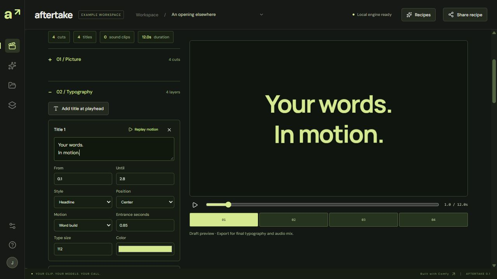

Your words.
In motion.
Type a title, choose its entrance, then make it yours. Four motion styles, editable timing and type size, with a live preview and the same motion in your exported film.
12 seconds · silent sample · 1280 × 720 · exported using the Film editor’s Export film button.
New: highlighted words that follow the voice ↗
Made in the editor.
In your local Aftertake workspace, open Film, import the editable project and adjust the titles. Replay an entrance while its settings stay beside the preview. These four entrance presets use their own timing. The separate Follow voice style uses generated speech timings with manual word adjustment.

The source snapshot on the main page includes this project, its source canvas and the renderer. New exports run in the local app. App code is MIT; font licenses apply separately.